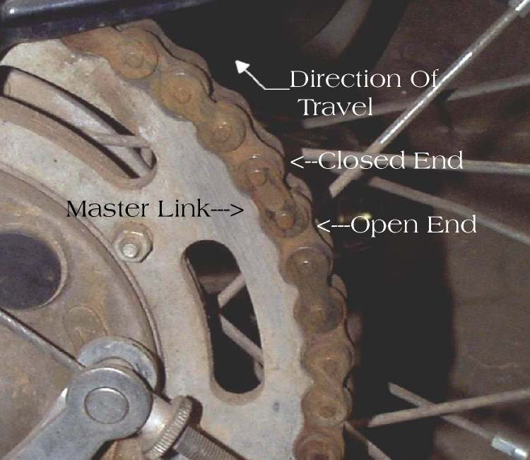
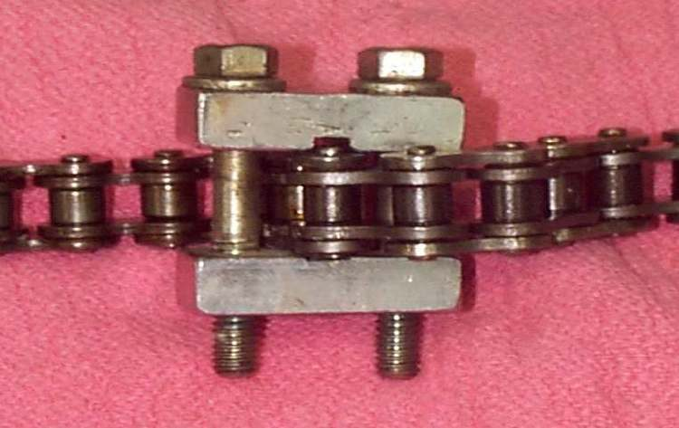
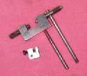
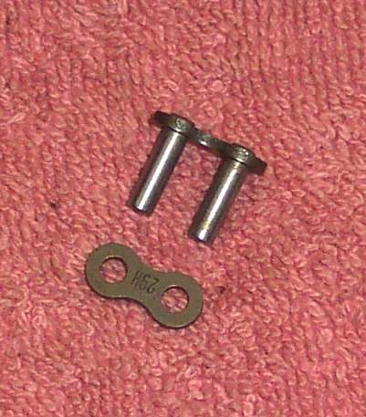
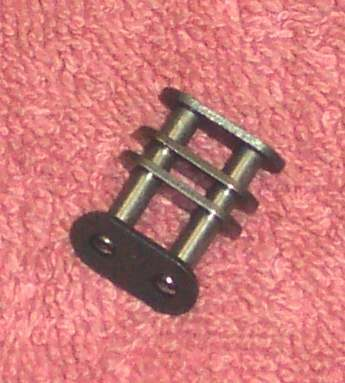

A drive chain is a closed loop joined at one link. A badly joined link can open at speed. The chain can then snap, lock the rear wheel or break the engine case. This page describes the three main link types. A chain with no joining link (endless) must be cut. See Replace the chain and sprockets for the whole job.
Safety
- A snapped chain is dangerous. Never use a worn or damaged chain, and never reuse a joining link.
- Cutting a chain with a grinder makes sparks. Keep away from fuel and wear eye protection.
- Shortening a chain that has stretched past its adjustment is not a repair. See Chain adjuster has run out of travel.
You need
- A joining link of the same size and type as the chain. Check the chain size code (Identify the size of a drive chain).
- For press-fit links: a chain press, or vice grips of the right size.
- For rivet links: a riveting tool.
Link types
- Clip (spring) link. A plate held by a clip. Fit the clip with the closed end pointing the way the chain travels. Save the old clip as a spare for the tool kit but do not reuse it on a new chain.
- Press-fit link. The side plate is pressed on. It can be very tight. Press it on with the proper tool until it seats.
- Rivet link. The pins are riveted over with a special tool. A punch and hammer, with a heavy block behind the link, can do it but is a poor second choice.
Steps
- Hang the chain on the sprockets so the ends meet. The joining link then goes in from behind.
- For O-ring chains, grease the O-rings and pins as the maker says.
- Fit the link and its plate or clip as above.
- Press or rivet, then check the link moves as freely as its neighbours. A stiff link is a fault.
- Set slack and alignment (Check and adjust chain slack) and lubricate.
Cutting an endless chain
- The best tool is a chain breaker.
- Without one, the pin heads of a link can be ground flush with the plate, then the pin knocked out with a punch.
- Keep in mind this damages the link. Do not reuse it for the new loop.
Check your work
- The joining link is the same type, size and strength as the chain.
- The clip is fully seated and the closed end faces forward.
- The link moves freely and the chain runs straight on both sprockets.
If it did not fix the problem
- The chain jumps or is noisy: Chain jumps teeth or comes off the sprockets and Chain is noisy, clattering or slapping.